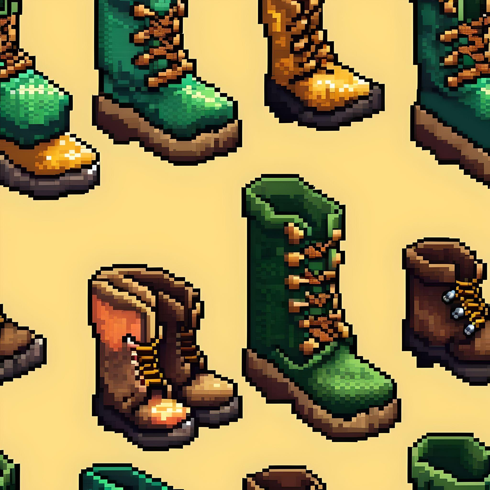

Per què el Xorret de Catí a Alacant és un bon ecosistema per als escorpins ?
Xorret de Catí és una àrea natural situada a Petrer, Alacant, destacada per la seva impressionant bellesa i valor ambiental. Integrada en el Paisatge Protegit de les Serres de Maigmó i el Cid, aquesta zona muntanyosa està envoltada per les majestuoses cims de les Serres del Maigmó i del Frare, que superen els 1.200 metres d'altitud, oferint cresteries i tallats rocosos espectaculars.
L'àrea recreativa de Xorret de Catí es troba en un entorn privilegiat, envoltat per la Serra del Maigmó, els Rasos de Catí, la Crestera del Frare i la Serra del Cid. La vegetació predominant inclou boscos de pi blanc i una varietat de plantes aromàtiques com timó, romer, pebrella i cua de gat.
Si ets un amant de la natura i et fascinen les criatures nocturnes, segur que t'interessarà saber per què el Xorret de Catí, a la província d'Alacant, és un lloc ideal per als escorpins. Aquest lloc màgic no només ofereix paisatges impressionants, sinó que també és una llar perfecta per a aquests aràcnids tan intrigants.
Descobrim per què!

Condicions Climàtiques Favorables
Clima Mediterrani
El Xorret de Catí es troba en una regió amb clima mediterrani, el que significa estius calorosos i secs i hiverns suaus. Els escorpins, com el *Buthus occitanus*, adoren aquest tipus de clima càlid i sec. Aquesta és una de les raons principals per les quals prosperen en aquesta àrea.
Baixa Humitat
A més, la baixa humitat és perfecta per als escorpins. Prefereixen ambients secs ja que els ajuda a evitar problemes de deshidratació i redueix el risc d'infeccions per fongs.

Estructura de l'Hàbitat
Rocas i Fendits
El Xorret de Catí està ple de roques, fendits i esquerdes, que són refugis naturals ideals per als escorpins. Aquests amagatalls els proporcionen protecció durant el dia, quan són més vulnerables als depredadors i a les condicions climàtiques extremes.
Sòls Arenosos i Pedregosos
Els sòls de l'àrea són perfectes per als escorpins. Els sòls arenosos faciliten que els escorpins puguin cavar i moure's, i les àrees pedregoses els proporcionen nombrosos llocs per amagar-se.

Disponibilitat de Preses
Abundància d'Insectes
La riquesa de flora en el Xorret de Catí atrau molts insectes, que són la principal font d'aliment per als escorpins. Una abundància constant de preses assegura que els escorpins sempre tinguin alguna cosa per menjar.
Biodiversitat
L'ecosistema mediterrani del Xorret de Catí és molt divers, creant un entorn equilibrat on els escorpins poden prosperar juntament amb altres espècies.

Refugi i Protecció
Microclimes Locals
Les característiques geogràfiques del Xorret de Catí creen microclimes que poden oferir refugis més frescos durant la calor del dia, cosa que és beneficiosa per als escorpins.
Vegetació Densa
La vegetació en l'àrea proporciona cobertura addicional i ajuda a mantenir la humitat del sòl en certs punts, oferint microhàbitats on els escorpins poden trobar aigua i ombra.
_ Ruta _

Distància: 1.2km
Durada estimada: 60 min
Horari recomanat: a partir de 22:30
Època ideal: juliol, agost
Dificultat: baixa
Desnivell: 1%

Descripció de la ruta
Rutes Amples i Segures:Perfectes per als Més Porucs. Si la por al perill t'impedeix explorar, els nostres camins t'ofereixen una experiència màgica sense sorpreses ni sobresalts.
Viu l'aventura sense el drama!
COM ARRIBAR
Consells per a la ruta del Escorpí al Xorret de Catí.

Vestimenta
Calçat Adequat
És essencial per a gaudir de l'experiència de forma segura i còmoda. Es recomana botes de senderisme o sabates esportives amb bona tracció per a evitar relliscades i assegurar un bon agarre en terrenys irregulars.
Duració: Aquest consell és vàlid durant tot el recorregut.

Accessoris
Llanterna
Una llanterna serà útil per a desplaçar-nos pel paratge; no obstant, no es recomana usar-la mentre observem els escorpins, per a que l'experiència siga més autèntica i màgica sota el mant de la nit.
Duració: Invaluable en terrenys no senyalitzats.

Accessoris
Llanterna de Llum Negra
Una llanterna de llum negra és imprescindible per a observar els escorpins, ja que aquests animals brillen sota la llum ultraviolada. Assegura't de portar una llanterna d'aquest tipus per a poder veure els escorpins en tot el seu esplendor.
Duració: Especialment útil durant les parts nocturnes de la ruta.

Consciència
Evitar Pertorbar l'Hàbitat
És fonamental respectar l'hàbitat natural dels escorpins. No toques ni mogues pedres o troncs, i mantín una distància prudent. Recorda que estem com a convidats en la seua llar i hem de minimitzar el nostre impacte.
Duració: En tot moment.
¿ Escorpins ?
Explorarem les seues característiques, comportaments i mesures de seguretat per a conviure amb aquests fascinants però a vegades perillosos aràcnids.

Descripció:
Mida: Els adults poden mesurar entre 6 i 8 cm de llarg.
Color: El seu color varia del groc pàl·lid al marró clar, el que els permet camuflar-se bé en el seu entorn.
Característiques Distintives: Posseeixen un parell de pinces davanteres, un cos segmentat i una cua amb un fibló verinós en l'extrem.

Comportament:
Nocturn: Són més actius durant la nit, el que fa ideal la seua observació en tours nocturns.
Alimentació: S'alimenten principalment d'insectes i aranyes. Utilitzen les seues pinces per a capturar les seues preses i el fibló per a injectar verí.
Reproducció: Les femelles porten els ous dins del seu cos i donen a llum a cries vives, que es pugen al dors de la mare fins a la seua primera muda.

Verí:
Toxicitat: El verí del Buthus occitanus és moderadament tòxic per als humans, causant dolor, inflor i, en casos rars, símptomes més greus. Les picades no solen ser mortals, però requereixen atenció mèdica, especialment en xiquets i persones al·lèrgiques.

Conservació:
Estat de Conservació: No es considera en perill d'extinció, però com tots els aràcnids, exerceix un paper important en l'ecosistema controlant la població d'insectes.
Diferències entre Mascles i Femelles d'Alacrà.

Tamany Corporal
Mascles: En moltes espècies d'alacrans, els mascles tendeixen a ser més prims i allargats en comparació amb les femelles.
Femelles: Les femelles solen tindre un cos més ample i robust.

Pectines (Pintes)
Mascles: Els mascles tenen pectines (òrgans sensorials en forma de pinta situats en la part inferior del cos) més grans i amb més dents (xicotetes cerdes). Estos pectines s'utilitzen per a detectar feromones i vibracions en el sòl.
Femelles: Les femelles tenen pectines més xicotets i amb menys dents en comparació amb els mascles.

Cua (Metasoma)
Mascles: La cua del mascle (el metasoma) tendeix a ser més llarga i prima. En algunes espècies, el quint segment de la cua és més allargat en els mascles.
Femelles: La cua de la femella sol ser més curta i robusta.

Palps (Pinces)
Mascles: En certes espècies, els mascles tenen pinces més llargues i primes, la qual cosa els ajuda durant el festeig i en la lluita amb altres mascles.
Femelles: Les femelles generalment tenen pinces més curtes i fortes.

Comportament de Festeig
Mascles: Els mascles realitzen un ritual de festeig complex que inclou la subjecció de les pinces de la femella i una "dansa" en la qual mouen la femella cap avant i cap arrere.
Femelles: Les femelles participen en este ritual de festeig però no l'inicien.
Dades Curioses sobre l'Alacrà.

Antics Supervivents
Els alacrans són un dels animals més antics de la Terra. Es creu que han existit durant més de 400 milions d'anys, la qual cosa significa que han sobreviscut a esdeveniments d'extinció massiva i han evolucionat molt poc des dels seus orígens prehistòrics.

Resistència Extrema
Els alacrans són increïblement resistents a condicions extremes. Poden sobreviure sense menjar durant mesos i resistir temperatures extremes que van des del fred del desert fins a la calor abrasadora.

Caçadors Nocturns
Són principalment nocturns, la qual cosa significa que cacen i són més actius durant la nit. Esta adaptació els ajuda a evitar la calor extrema del dia i a aprofitar la frescor de la nit per a caçar insectes i altres xicotetes preses.

Verí amb Propòsit
El verí de l'alacrà no sols serveix per a defensar-se i caçar, sinó que també té propietats mèdiques. Els científics estan investigant components del verí de l'alacrà per a desenvolupar tractaments per a malalties com el càncer i per a crear analgèsics més efectius.

Llargària en el Món Aràcnid
En comparació amb altres aràcnids, els alacrans tenen una vida relativament llarga. Algunes espècies poden viure entre 4 i 25 anys, depenent de les condicions ambientals i del seu hàbitat.

Parentalitat Protectora
Després de donar a llum a cries vives, la mare alacrà porta les seues cries en el seu llom fins que s'han sotmés a la seua primera muda. Durant este temps, les cries són vulnerables i depenen completament de la protecció maternal.

Adaptació a la Deshidratació
Els alacrans tenen la capacitat de reduir la seua taxa metabòlica i limitar la pèrdua d'aigua, la qual cosa els permet sobreviure en ambients àrids i desèrtics on altres animals no podrien.
Després de compartir amb vosaltres tots els detalls sobre la fascinant ruta per observar alacrans al Xorret de Catí, arriba el moment d'acomiadar-nos. Ha estat un plaer guiar-vos a través d'aquest viatge ple de misteri i descobriments nocturns. L'experiència de veure aquests increïbles éssers al seu hàbitat natural és una cosa que no s'oblida fàcilment.
Vull convidar-los que no es quedin només amb el que heu llegit. Sortiu i visqueu l'aventura! La natura sempre té alguna cosa nova per mostrar-nos i el Xorret de Catí és el lloc perfecte per connectar-hi d'una manera única. Arma la teva motxilla, prepara la teva llanterna UV i vine a descobrir el món secret dels alacrans. T'asseguro que serà una experiència inoblidable.
¡ Ens veiem en el camí !